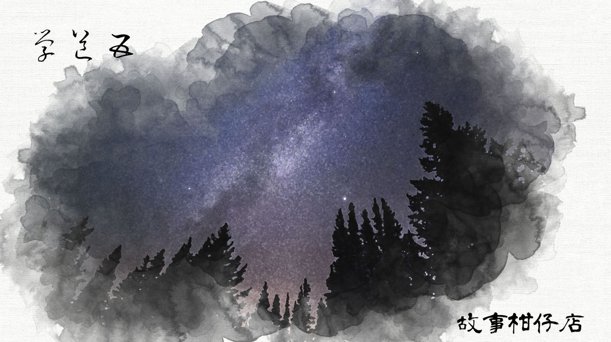
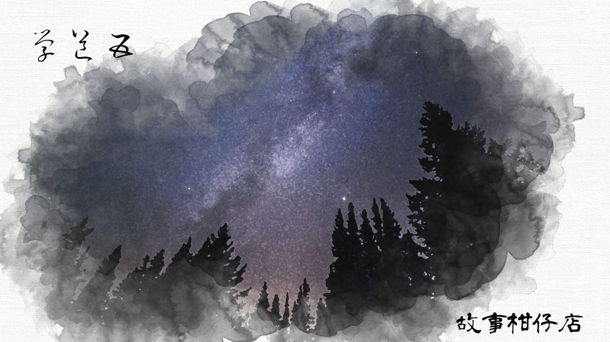

玄墨行者．學道（五）

焚盤香，盛瀑水，敬天地，謝八方。內堂裡，玄墨七者席地而坐成圈。氣氛肅穆，壁畫兩老者倒是閒情依舊。
老大天樞的右手邊分別是老二玄天璇、老三玄天璣、老四玄天權；左手邊則是老五玄玉衡、老六玄開陽、老七玄瑤光。大曲則站在天樞身後。
同屬玄字輩，七人各有千秋，風情萬種。
「今日召開會議，還讓老六、老七特地返山，辛苦了。」天樞率先開口。其實天璣也是凌晨才趕回來的，卻不小心被忘記了。
開陽、瑤光最年輕也最利索，相較師兄，他們總是花比較多時間在山下打打零工，賺取門派所需。他倆裝扮也明顯不同，穿著簡單t-shirt，瑤光還套了件膝蓋破洞的牛仔褲。會議起始，照例由他倆報告新一季業績。
瑤光有一對深邃細長的眼睛，頭髮剃得短短，他一笑，能泯滅世間所有煩惱。「你們知道現在水電工多缺嗎？多虧我們墨者擅長修理、造機關，別說下一季，下下一季的開銷，我也賺足了。」
「這麼厲害，待會去把後頭雞籠補一補。」老五玉衡是位婦人，梳了個鬆鬆的髻，插著支琥珀步搖髮簪，一張臉潤白如玉，眼角爬滿細碎皺紋。
「小事，交給我來不就得了？」開陽笑道。
「不瞞各位師兄，我近期還兼修手機賺外快。」瑤光從背包掏出七部大小不一的手機，「這是客人淘汰的，我全修好了，還綁了兩年約。咱們一人一支，聯繫多方便呀。」
瑤光拿起手機示範line的用法，大曲小心翼翼探頭探腦，就怕被天樞發現自己的好奇，老二天璇硬是撇開頭：「現代科技，哪比得上祖師智慧。」
開陽接話了：「這好哇！否則每次都得用木鳶傳信，最少也得等上三天。」他縮縮脖子，「而且，在山下給人看見了木鳶，有點難為情啊。」
「各位師兄就收下吧，學著玩玩也好。」瑤光搔搔頭，「不過咱們這沒基地台，得到湖外的斷崖邊才收得到訊號，小心可別跌下去啦。」
「噗哧！」保持沈默的老四天權終於忍俊不住，隨即吃了天樞瞟來的冷冷一眼，趕緊又斂起笑容。
「行了、行了，到此為止。今日開會，有另一要事。」天樞收起其中一部手機，其他人紛紛跟進，坐挺了身子洗耳恭聽。
天樞盤腿，雙掌曲鬆置於膝頭，眼皮低垂，氣凝如石，唯鬍髭微微掀動。
「十七年前，北斗七星東南方憑空出現一顆青色妖星，三天後隨即爆發人妖大戰，我們平亂之後，妖星隨之消弱。但近日妖星又復發光，旁邊還多了顆小妖星。天現異象，我憂煩人間又現大亂，特地召集諸位商量對策。」
突如其來的消息，像一隻蟲子爬過腳邊，引起了不出聲的騷動。天璇挑起一邊眉毛，冷哼一聲，「今日妖星，恐怕是當年斬草未除的根。」說著，眼睛便轉向天璣。
天璣身著一襲深苔色長袍，手肘、胸口、膝蓋處舊得磨出泛白，整個人瘦得仙風道骨，兩道長長的八字鬍跟著飄飄然。默不作聲，他撫摳指尖的繭，在眾師兄弟移開眼光的前一秒開了口：
「這次下山，到岡山及新莊收了白猿妖及黑狗妖，已鎖進妖庫。無人傷亡，也沒有引起騷動。」明知答得牛頭不對馬嘴，他仍一派淡漠，「以上是我的報告。聽說拾兒不受教，我去教訓他。」
說完，起身，像一曲滿佈苔蘚的河流。水門分開，他不顧身後氣得吹鬍子瞪眼睛的二師兄，走了出去。
出了石門，便見拾兒與虹月湊在一起，兩人把玩著藉車，你一言我一語：
「依我看，這軸承得加長一點，才能增強投射力道。」
「才怪。要是我就修短，盡可能縮小體積。」
天璣瞧著兩顆吵得興頭上的腦袋瓜，不自覺笑了，朗然出聲：「軸承長，適用遠距戰；軸承短，適用近距戰。你們倆都沒錯。」
兩顆腦袋瓜同時轉了過來，拾兒咧開嘴大喊：「師父，您回來啦！」
天璣故意繃著嘴角，問：「聽說你頂撞你大師伯了？」
拾兒嘟囔：「話也傳太快了。況且，哪有這麼嚴重。」
虹月岔開話題：「三師伯，您這次下山收妖還順利嗎？」
「順利或不順利，都是劫。」天璣從懷裡掏出一包墨黑色方塊物體，遞給虹月，「為師這次吃到的新奇玩意，布朗尼，嚐嚐。」
一個閃神，那包布朗尼已到拾兒手上，與虹月兩人吃得嘴角沾墨，津津有味。
「師父，這個比上次您帶回來的蛋塔好吃！」
「蛋塔？」天璣蹙起眉，沈思了會，「經你一說，這回下山，滿街的蛋塔店倒是都消失了。」
－－－－－
#新連載依舊兩天一篇每晚準時六點半喔
#請人客多多指教
#記得去各大書店買我們的書故事柑仔店哩
